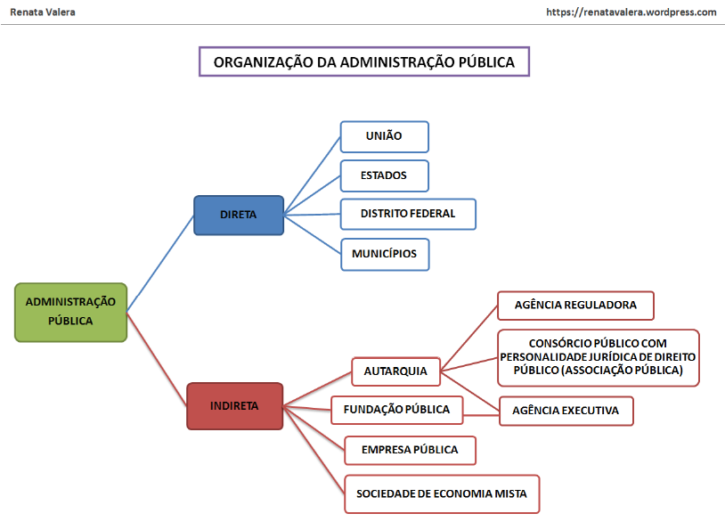

5 ADMINISTRAÇÃO PÚBLICA FEDERAL
5.1 Princípios constitucionais e normas que regem a administração pública (artigos de 37 a 41 da Constituição Federal de 1988).
Leitura: Di Pietro, Direito Administrativo, 28a edição (2015, p.82):
Definição de Administração Pública: a atividade concreta e imediata que o Estado desenvolve, sob regime jurídico total ou predominantemente público, para a consecução dos interesses coletivos. Sob sentido subjetivo: o conjunto de órgãos aos quais a lei atribui o exercício da função administrativa do Estado.
Não há uma separação absoluta de poderes. A CF88 (art. 2°) define as respectivas atribuições dos 3 poderes, confere predominantemente a cada um dos poderes uma das três funções básicas do Estado (legislação, jurisdição e administração), prevendo algumas interferências (freios e contrapesos).
Assim, o Legislativo e o Judiciário - além de legislar e julgar - exercem também algumas funções administrativa (e.g. as decorrentes dos poderes hierárquico e disciplinar sobre os respectivos servidores, ou quando o Senado processa e julga a Presidenta da República, PGR, AGU, STJ, CNMP ou STF por crime de responsabilidade).
A Administração Pública é preponderância do Poder Executivo, mas não existe exclusividade no exercício dessa atribuição. Compreende, em sentido estrito:
- em sentido subjetivo: as pessoas jurídicas, órgãos e agentes públicos que exercem a função administrativa;
- em sentido objetivo: a atividade administrativa exercida por aqueles entes.
A Administração Pública abrange:
- O fomento: incentivo à iniciativa privada de utilidade pública, através de:
- auxílios financeiros ou subvenções, por conta dos orçamentos públicos;
- financiamento, sob condições especiais, para construção, indústrias, etc., que tenham por fim a produção em larga escala de materiais de interesse popular;
- favores fiscais que estimulem atividades consideradas benéficas ao progresso material do país;
- desapropriações que favoreçam entidades privadas sem fins lucrativos, que realizem atividades úteis à coletividade (e.g. clubes, instituições beneficentes).
- A polícia admninistrativa compreende toda atividade de execução das chamadas limitações administraticas, que são restrições impostas por lei ao exercício de direitos infdividuais em benefício do interesse coletivo;
- O serviço público, que é toda atividade que a Administração Pública executa, direta ou indiretamente, para satisfazer à necessidade coletiva. Todas as/ atividades que, por sua essencialidade para a sociedade, foram assumidas pelo Estado. Exemplos (emenda constitucional n°8/95, art. 21):
- serviço postal e correio aéreo nacional;
- serviços de telecomunicações;
- serviços e instalações de energia elétrica e aproveitamento energético;
- radiodifusão;
- navegação aérea;
- aeroespacial;
- transporte ferroviário e aquaviário;
- transporte rodoviário interestadual e internacional de passageiros;
- serviços de portos;
- serviços oficiais de estatística, geografia, geologia e cartografia de âmbito nacional;
- serviços nucleares.
- A intervenção, que compreende a regulamentação e fiscalização da atividade econômica de natureza privada, bem como a atuação direta do Estado no domínio econômico (normalmente através de empresas estatais). Pode não ser considerada parte da Administração Pública, e os autores que compartilham dessa ideia a defendem porque é o Estado agindo na atividade privada em regime de monopólio (ou competição com o particular).
5.1.1 Princípios da Administração Pública
Legalidade: a Administração Pública só pode fazer o que a lei permite. Ela não pode, por simples ato administrativo, conceder direitos de qualquer espécie, criar obrigações ou impor vedações aos administrados; para tanto, ela depende da lei.
Supremacia do interesse público sobre o particular (princípio da finalidade pública).
Impessoalidade: pode significar tanto que esse atributo deve ser observado em relação aos administrados como à própria Administração. No primeiro sentido, a Administração não pode atuar com vistas a prejudicar ou beneficiar pessoas determinadas. No segundo, significa que os atos e provimentos administrativos são imputáveis não ao funcionário que os pratica, mas ao órgão ou entidade administrativa da Adm. Pública - os atos governamentais não são do funcionário ou autoridade, mas da entidade pública.
Presunção de Legitimidade/Veracidade/Legalidade: presume-se verdade e legalidade até que se prove o contrário.
Especialidade: descentralização administrativa. A lei que cria uma entidade estabelece com precisão as finalidades que lhe incumbe atender.
Controle ou tutela: as entidades da Adm. Pública Direta fiscaliza as atividades das entidades da Adm. Pública Indireta. Confrontam-se a independência da entidade e a necessidade de controle dela por parte da pessoa jurídica política (União, Estados, Municípios) que a instituiu. A regra é autonomia, a exceção é o controle - que só pode ser exercido nos limites definidos em lei.
Autotutela: controle sobre os próprios ato, com a responsabilidade de anular os ilegais e revogar os inconvenientes e inoportunos.
Hierarquia: órgãos da Adm. Pública são estruturados com uma relação de coordenação e subordinação entre uns e outros - tudo previsto em lei. Implica em:
- Rever os atos dos subordinados
- delegar e avocar atribuições
- punir
- obediência (para o subordinado).
Continuidade do Serviço Público: o serviço público não pode parar
- proibição de greve (mas nunca regulamentou em lei então meio que pode com regras de uma decisão do STF)
- suplência, delegação e substituição de funções vagas
- quem contrata com a Administração (concessão de serviço público) não pode
- não cumprir enquanto espera que ela cumpra;
- ter funcionário público trabalhando lá dentro;
- extinguir o contrato unilateralmente.
Publicidade: ampla divulgação dos atos praticados pela Administração Pública, ressalvadas as hipóteses de sigilo previstas em lei - considerando a defesa da intimidade (honra/vida privada/constrangimento) e o interesse social em questão.
- Em caso de conflito entre esses dois polos, utiliza-se o princípio da proporcionalidade (regras da necessidade, adequação e proporcionalidade): a medida deve trazer o mínimo de restrição ao titular de direito, devendo preferir os meios menos onerosos (necessidade), deve ser apropriada para a realização do interesse público (adequação) e deve ser proporcional ao fim a atingir (proporcionalidade).
- Assegura a todos o acesso à informação.
- Todos têm direito a receber dos órgãos públicos informações de seu interesse particular ou de interesse coletivo, ressalvadas aquelas cujo sigilo seja imprescindível à segurança da sociedade e do Estado
- O direito de acesso de informação à pessoa é garantido pelo habeas data (ação para tomar conhecimento ou retificar informações)
- Transparência e planejamento da gestão fiscal, com incentivo à participação popular e realização de audiências públicas durante os processos de elaboração dos planos (Lei de Responsabilidade Fiscal)
Moralidade Administrativa: o conjunto de regras de conduta tiradas da disciplina interior da administração. É imposta dentro e vigora no próprio ambiente institucional e condiciona a utilização de qualquer poder jurídico. Relacionada a desvio de poder - ilegalidade quanto aos fins.
Razoabilidade e Proporcionalidade: ato administrativo é “irrazoável” quando
- não dê os fundamentos de fato ou de direito que a sustentam ou;
- não leve em conta os fatos constantes do expediente ou públicos e notórios;
- não guarde uma proporção adequada entre os meios que emprega e o fim que a lei deseja alcançar, ou seja, que se trate de uma medida desproporcionada, excessiva em relação ao que se deseja alcançar
Motivação: a Administração Pública deve indicar os fundamentos (pressupostos) de fato e de direito de suas decisões quando (CF88, art. 50):
- neguem, limitem ou afetem os direitos ou interesses;
- imponham ou agravem deveres, encargos ou sanções;
- decidam processos administrativos de concurso ou seleção pública;
- dispensem ou declarem a inexigibilidade de processo licitatório;
- decidam recursos administrativos;
- decorram de exame de ofício;
- deixem de aplicar jurisprudência firmada sobre a questão ou discrepem de pareceres, laudos, propostas e relatórios oficiais;
- importem anulação, revogação, suspensãoou convalidação de ato administrativo.
Eficiência: apresenta dois aspectos. Pode ser considerado em relação ao modo de atuação do agente público, do qual se espera o melhor desempenho possível de suas atribuições para lograr os melhores resultados. E também em relação ao modo de organizar, estruturar, disciplinar a Administração Pública, também com o mesmo objetivo de alcançar os melhores resultados na prestação do serviço público.
Segurança Jurídica, Proteção à Confiança e Boa Fé:
- Segurança Jurídica: este princípio foi inserido nos princípios com o intuito de vedar a aplicação retroativa de nova interpretação de lei no Âmbito da Administração Pública (lei 9784/99) - com exceção de atos praticados com inobservância da lei. Este princípio está na base das normas sobre prescrição e decadência, que fixam prazo para a Administração rever os próprios atos.
- Proteção à Confiança: existe para proteger a confiança que o particular deposita na Administração Pública.Leva em conta a boa-fé do cidadão, que acredita e espera que os atos praticados pelo Poder Público sejam lícitos e, nessa qualidade, serão mantidos e respeitados pela própria Administração e por terceiros. É um subprincípio da segurança jurídica, e se prende mais com as componentes subjetivas da segurança, designadamente a calculabilidade e previsibilidade dos indivíduos em relação aos efeitos jurídicos dos actos.
- Boa Fé: abrange
- um aspecto objetivo: que diz respeito à conduta leal, honesta e
- um aspecto subjetivo: que diz respeito à crença do sujeito de que está agindo corretamente.
5.1.2 Poderes da Administração Pública
A discricionaridade e a vinculação são atributos de outros poderes ou competências da Administração.
- Poderes vinculados: uma “restrição” dos poderes da Administração Pública. Pressupõe que o legislador preestabelece todos os requisitos do ato de tal forma que (estando eles presentes) não cabe à autoridade administrativa senão editá-lo sem apreciação de qualquer aspectos concernentes à oportunidade, conveniência, interesse público, equidade.
- Poderes discricionários: tem inserida em seu bojo a ideia de prerrogativa já que a lei, ao atrinuir determinada competência, deixa alguns aspectos do ato para serem apreciados pela Administração diante do caso concreto. Implica liberdade a ser exercida nos limites fixados na lei.
Poder Normativo: podem-se dividir os atos normativos em originários e derivados. Há autores que sinonimizam-o com Poder Regulamentar.
- Originários se dizem os emanados de um órgão estatal em virtude de competência própria, outorgada pela Constituição, para edição de regras instituidoras de direito novo. Compreende os atos emanados do Legislativo.
- Derivados são os atos normativos que têm por objetivo a “explicitação ou especificação de um conteúdo normativo preexistente, visando à sua execução no plano da praxis. É o regulamento. Explicitam ou complementam as leis, sem ultrapassar os horizontes da legalidade.
Poder regulamentar é uma das formas pelas quais se expressa a função normativa do Poder Executivo: é o que cabe ao chefe do Executivo da União, dos Estados e dos Municípios de editar normas complementares à lei, para sua fiel execução. Existem dois tipos de regulamentos:
Regulamento Executivo: complementa a lei, e não pode estabelecer normas contra ou sobre a lei. Não pode inovar na ordem jurídica, criando direitos, obrigações, proibições ou medidas punitivas. Ele tem que se limitar a estabelecer normas sobre a forma como a lei vai ser cumprida pela Administração.
Regulamento Independente ou Autônomo: inova na ordem jurídica, pq estabelece normas sobre matérias não disciplinadas em lei; ele não complementa nem desenvolve nenhuma lei prévia.
Regulamentos Jurídicos ou Normativos: estabelecem normas sobre as relações que ligam todos os cidadãos ao Estado. Voltam-se para fora da Administração Pública, dizem respeito à liberdade e aos direitos dos particulares.
Regulamentos Administrativos ou de Organização: contêm normas sobre a organização administrativa entre os particulares que estejam em situação de submissão especial ao Estado (contrato, concessão de serviço público, convocação para serviço militar, nomeação de servidor público, internação em hospital público, etc).
Se expressa por decreto regulamentar, resoluções, portarias, instruções, regimentos, atos normativos.
Poder Disciplinar: cabe à Administração Pública apurar infrações e aplicar penalidades aos servidores públicos e demais pessoas sujeitas à disciplina administrativa (e.g. estudantes de escola pública). Medidas aplicadas a não-sujeitos à disciplina interna da Administração são fundamentadas no poder de polícia do Estado.
- O poder disciplinar aplicado aos servidores públicos é uma decorrência da hierarquia (próximo item), mesmo no Poder Judiciário e no Ministério Público (onde não há hierarquia quanto ao exercício de suas funções institucionais) ele existe quanto ao aspecto fundamental da relação de trabalho e seus membros ficam sujeitos à disciplina interna da instituição.
O Poder Disciplinar é discricionário, mas atenção: não é discricionaridade entre punir e não punir. A discricionaridade existe limitadamente nos procedimentos previstos para apuração da falta. A Administração geralmente tem o poder de levar em consideração, na escolha da pena, a natureza e a gravidade da infração e os danos ao serviço público. A discricionaridade também existe em infrações não definidas em lei (e.g. procedimento irregular, ineficiência no serviço, falta grave).
Nenhuma penalidade pode ser aplicada sem apuração por meio de procedimento legal.
Poderes Decorrentes da Hierarquia: é uma atribuição quase exclusiva do Presidente da República a organização hierárquica, exceto quando acarrete aumento de despesa - que então é matéria de lei de iniciativa do Presidente da República.
Mesmo quando dependa de lei, da organização administrativa decorrem para a Administração Pública diversos poderes:
- o de editar atos normativos (resoluções, portarias, instruções), para ordenar a atuação dos órgãos subornidados
- o de dar ordens aos subordinados, que são obrigados a obedecer (salvo para ordens ilegais)
- o de controlar a atividade dos órgãos inferiores, podendo anular atos ilegais ou revogar atos inconvenientes ou inoportunos
- o de aplicar sanções em caso de infrações disciplinares
- o de avocar (chamar a si) atribuições que não sejam da competência exclusiva do órgão subordinado
- o de delegar atribuições que não lhe sejam primitivas
Existem órgãos que apesar de estarem incluídos na hierarquia administrativa, não podem sofrer determinação de comportamento por parte de seus superiores (conselhos, órgãos disciplinares, colegiados).
Nos poderes Judiciário e Legislativo não existe hierarquia no sentido de relação de coordenação e subordinação no que diz respeito às suas funções institucionais.
No Judiciário há uma distribuição de competências entre instâncias, mas uma funcionando com independência da outra (um juiz de instância superior não dá ordem a um juiz de instância inferior, nem pode revogar e anular atos por ele praticados). Há uma hierarquia parcial entre o STF e todos os demais quando de uma decisão sobre matéria constitucional aprovada como súmula (Emenda Constitucional 45/2004), que tem efeito vinculante para todos.
No Legislativo a distribuição de competências entre Câmara e Senado também se faz de forma que haja absoluta independência funcional entre uma e outra Casa do Congresso.
Poder de Polícia:
5.2 Estrutura organizacional da Administração Pública Federal (Decreto Lei nº 200/1967).
A Administração do Estado compreende (redação dada pela Lei n°7596/87):
Administração Direta do Estado, que se constitui dos serviços integrados na estrutura administrativa da Presidência da República e dos Ministérios. São todos os órgãos integrantes das pessoas jurídicas políticas (União, Estados, Municípios e DF).
Administração Indireta do Estado: entidades de personalidade jurídica própria, de direito público ou privado. São:
- autarquias;
- empresas públicas;
- sociedades de economia mista;
- fundações públicas;
- consórcios públicos (disciplinados pela lei 11107/05)

5.3 Agentes públicos: Regime Jurídico Único (Lei nº 8.112/1990 e suas alterações).
5.3.1 Servidores Públicos - Terminologia + Cargo/Emprego/Função
Agente Público é toda pessoa física que presta serviçoes ao Estado e às pessoas jurídicas da Administração Indireta. Servidor Público são pessoas que prestam serviços à Administração Pública Direta, autarquias e fundações públicas, com vínculo empregatício. São 4 as categorias de agentes públicos:
Agentes Políticos: (segundo a definição de Celco Antônio Bandeira de Mello (1975)) Presidente da República, Governadores, Prefeitos e respectivos auxiliares imediatos (Ministros e Secretários), os Senadores, os Deputados e os Vereadores. São as funções que implicam a fixação de metas, de diretrizes, ou de planos governamentais.
Podem-se incluir também os membros da Magistratura nesta categoria, desde que se tenha presente o sentido de que sua função é considerada política, porque correspondem ao exercício de uma parcela da soberania do Estado.
Da mesma forma, pode-se incluir membros do Ministério Púclico nesta categoria, pelas funções de controle que lhes foram atribuídas a partir da CF88 (art. 129) - especialmente a de “zelar pelo efetivo respeito dos Poderes Públicos e dos serviços de relevância pública aos direitos assegurados na Constituição, promovendo as medidas necessárias a sua garantia”.
Servidores Públicos: pessoas físicas que prestam serviços ao Estado e às entidades da Administração Indireta, com vínculo empregatício e mediante remuneração paga pelos cofres públicos. Compreendem:
os servidores estatutários, sujeitos ao regime estatutário e ocupantes de cargos públicos. Submetem-se a regime estatutário estabelecido em lei por cada unidade da federação. Membros da Magistratura, do MP, do Tribunal de Contas, da Advocacia Pública e da Defensoria Pública.
os empregados públicos, contratados sob o regime da legislação trabalhista e ocupantes de emprego público. São contratados sob regime da legislação trabalhista.
os servidores temporários, contratados por tempo determinado para atender à necessidade temporária de excepcional interesse público; eles exercem a função sem estarem vinculados a cargo ou emprego público.
A Constituição veda a utilização de medidas provisórias para a ciação de empregos. Também veda a aplicação do regime celetista (CLT) para os cargos em comissão, para os servidores regidos pela Lei 8112/90 (regime de servidores públicos civis da União, das autarquias e das fundações públicas federais), bem como para a criação de empregos não criados por lei específicas.
Estabilidade para os servidores celetistas: só pode haver rescisão unilateral nas seguintes hipóteses:
- prática de falta grave, dentre as enumeradas no art. 482 da CLT
- acumulação ilegal de cargos, empregos ou funções públicas
- necessidade de redução de quadro de pessoal, por excesso de despesa, nos termos da lei complementar a que se refere o art. 169 da Constituição
- insuficiência de desempenho, apurada em procedimento no qual se assegurem pelo menos um recurso hierárquico dotado de efeito suspensivo, e o prévio conhecimento dos padrões mínimos exigidos para continuidade da relação de emprego
Militares: PMs, Bombeiros, Marinha, Exército e Aeronáutica.
Particulares em colaboração com o Poder Público: pessoas físicas que prestam serviços ao Estado, sem vínculo empregatício, com ou sem remuneração. Gestores de negócio que assumem função pública em momento de emergência, jurados, convocados para prestação de serviço militar ou eleitoral, comissários de menores, integrantes de comissões, grupos de trabalho, leiloeiros, tradutores e intérpretes públicos.
5.3.1.1 Normas Constitucionais
5.3.1.1.1 Regime Jurídico dos Servidores
Isonomia é a palavra chave. Igualdade de direitos e deveres. No caso dos servidores públicos, a isonomia deve ser observada em aspectos como o regime jurídico, a remuneração e as condições de ingresso. Aplica-se a todos os servidores da Administração Pública Direta, autarquias e fundações públicas.
5.3.1.1.2 Direito de Acesso aos Cargos, Empregos e Funções Públicas
Apenas para brasileiros (natos ou naturalizados). Estrangeiros podem para atender a necessidade temporária de exepcional interesse público - com exceção de universidades e instituições de pesquisa científica e tecnológica (só na esfera federal - estados e municípios devem editar suas próprias normas).
5.3.1.1.3 Condições de Ingresso
Depende da aprovação prévia em concurso público de provas ou de provas e títulos, com as exceções de:
i) cargo em comissão declarado em lei de livre nomeação e exoneração (“funções de confiança” - chefia, direção e assessoramento - só podem ser exercidas por servidores efetivos ou de carreira);
ii) membros dos Tribunais.
iii) cargos temporários, obrigatóriamente de admissão/contratação por tempo determinado para atender nessecidade transitória de excepcional interesse público. Quem é contratado nessa modalidade não pode ser recontratado após o final do período determinado. Se dão por meio de processo seletivo simplificado. Estas são, exclusivamente:
- calamidade pública (sem processo seletivo),
- emergência em saúde pública (sem processo seletivo),
- recenseamento e outras pesquisas do IBGE,
- admissão de professor subistituto/visitante (sem processo seletivo, mas com análise de CV e à vista de notória capacidade técnica),
- admissão de professor/pesquisador estrangeiro (sem processo seletivo, mas com análise de CV e à vista de notória capacidade técnica),
- Atividades:
- especiais nas organizações das Forças Armadas oara atender à área industrial ou a encargos temporários de obras e serviços de engenharia (sem processo seletivo, mas com análise de CV e à vista de notória capacidade técnica);
- de identificação e demarcação desenvolvidas pela Funai;
de análise e registro de marcas e patentes pelo Instituto Nacional da Propriedade Industrial - INPI(Revogado pela Lei nº 10.667, de 2003)finalísticas do Hospital das Forças Armadas(inconstitucional) (era sem processo seletivo, mas com análise de CV e à vista de notória capacidade técnica);- de pesquisa e desenvolvimento de produtos destinados à segurança de sistemas de informações, sob responsabilidade do CEPESC (Centro de Pesquisa e Desenvolvimento para a Segurança das Comunicações) (sem processo seletivo, mas com análise de CV e à vista de notória capacidade técnica);
- de vigilância e inspeção, relacionadas à defesa agropecuária, no âmbito do Ministério da Agricultura e Pecuária (MAPA), para atendimento de situações emergenciais ligadas ao comércio internacional de produtos de origem animal, vegetal, ou humana;
desenvolvidas no âmbito de projetos do Sistema de Vigilância da Amazônia (SIVAM) e do Sistema de Proteção da Amazônia (SIPAM)(inconstitucional) (era sem processo seletivo, mas com análise de CV e à vista de notória capacidade técnica);- técnicas especializadas, no âmbito de projetos de cooperação com prazo determinado, implementados mediante acordos internacionais, desde que haja, em seu desempenho, subordinação do contratado ao órgao ou entidade pública;
- técnicas especializadas necessárias à implantação de órgãos ou entidades ou de novas atribuições definidas para organizações existentes ou as decorrentes de aumento transitório no volume de trabbalho que não possam ser atendidas mediante a aplicação do art. 74 da Lei 8112/90 (adicional por serviço extraordinário em situações excepcionais e temporárias) (processo seletivo simplificado, critérios e condições estabelecidas pelo Poder Executivo);
- técnicas especializadas de tecnologia da informação, de comunicação e de revisão de processos de trabalho, não alcançados pelo item anterior e que não se caracterizem como atividades permanentes do órgão ou entidade (processo seletivo simplificado, critérios e condições estabelecidas pelo Poder Executivo);
- didático-pedagócidas em escolas de governo (sem processo seletivo, mas com análise de CV e à vista de notória capacidade técnica);
- de assistência à saúde para comunidades indígenas (sem processo seletivo, mas com análise de CV e à vista de notória capacidade técnica);
- admissão de professor, pesquisador e tecnólogo substitutos para suprir falta de professor, pesquisador ou tecnólogo ocupante de cargo efetivo, decorrente de licença para exercer atividade empresarial relativa à inovação;
- em casos de vacância do cargo, por exemplo por afastamento ou licença, ou por nomeação para ocupar cargo de direção de reitor, vice-reitor, pró-reitor e diretor de campus
- não pode ultrapassar 20% do total de docentes efetivos na instituição federal de ensino
- admissão de pesquisador, nacional ou estrangeiro, para projeto de pesquisa com prazo determinado, em instituição destinada à pesquisa;
- combate a emergências ambientais, na hipótese de declaração pelo ministro de Meio Ambiente, de emergência ambiental na região específica;
- admissão de professor para suprir demandas decorrentes da expansão das instituições federais de ensino, respeitados os limites e as condições fixadas em ato conjunto dos Ministérios do Planejamento, Orçamento e Gestão, e da Educação;
- admissão de professor para suprir demandas excepcionais decorrentes de programas e projetos de aperfeiçoamento de médicos na área de Atenção Básica em Saúde em regiões prioritárias para o SUS, mediante integração ensino-serviço, respeitados os limites e as condições fixados em ato conjunto dos Ministérios do Planejamento, Orçamento e Gestão, da Saúde e da Educação.
Não pode existir “concurso interno”. Quem já é servidor precisa fazer concurso pra passar pra outro cargo de servidor na Administração Pública.
Concursos Públicos têm validade de dois anos, prorrogável uma vez por igual período - à critério da Administração. Enquanto houver candidatos aprovados em concurso e este estiver dentro do prazo de validade fixado no edital, eles terão prioridade para a nomeação, ainda que a Administração tenha feito outro concurso, também com candidados habilitados.
São vedadas diferenças de salários, de exercício de funções e de critério de admissão por motivo de sexo, idade, cor ou estado civil. Isso é pra impedir discriminações, mas elas ainda existem quando razoáveis (e.g. guarda de presídio feminino tem que ser mulher).
Nomeação e nepotismo: se enquadram cônjuge, companheiro ou parente em linha reta, colateral ou por afinidade, até o terceiro grau, inclusive, da autoridade nomeante ou de servidor da mesma pessoa jurídica investido em cargo de direção, chefia ou assessoramento, para o exercício de cargo em comissão ou de confiança ou, ainda, de função gratificada na Administração Pública direta e indireta em qualquer dos poderes da União, dos Estados, do DF e dos Municípios. Viola o princípio da moralidade administrativa (CF88, art. n°37, I).
5.3.1.1.4 Sistema remuneratório dos Servidores Públicos
Isonomia de vencimentos e subsídios para determinadas categorias e agentes públicos.
O salário base de todos é igual e fixo, mas uma parte é variável (vantagens pecuniárias - prestação de serviço, tempo de serviço etc): adicionais, gratificações e verbas indenizatórias. Essa é a remuneração ou vencimento (a soma do fixo+variável).
Aí vem os legisladores e incluem o subsídio na Emenda Constitucional n° 19/98, apenas para algumas categorias de agentes públicos (ver abaixo).
5.3.1.1.5 Normas constitucionais pertinentes à remuneração ou vencimento
Vencimentos de servidores de um poder não podem ser superiores àqueles de outros poderes (isonomia). Vencimentos devem ser revistos anualmente.
Não há isomonia ou paridade dos vencimentos de aposentados e pensionistas com os vencimentos dos servidores em atividades. O valor se congela no momento da aposentadoria/falecimento - com a exceção de quem entrou no serviço público antes da data de alteração da lei (emenda constitucional n° 19 de 16/dez/1998), que sim têm a paridade, porque são assegurados por emendas constitucionais posteriores.
A Emenda n° 19/98 (a.k.a Emenda da Reforma Administrativa) também veda a vinculação ou equiparação automática da remuneração do pessoal do Serviço Público (não é ligada a nenhum outro cargo, nem ao salário mínimo, aumento de arrecadação, títulos da dívida pública, e não é reajustada automaticamente com base em nada). Isso implica também que é inconstitucional Estados e Município vincularem a remuneração se seus servidores aos da União.
O que limita o gasto com pessoal - e diretamente a capacidade de fazer reajuste de salários - é a Lei de Responsabilidade Fiscal (Lei Complementar n° 101/00): a União não pode gastar mais de 50% da receita corrente líquida com pessoal, Estados e Municípios 60%. O aumento de remuneração, criação de cargos/empregos/funções, alteração da estrutura da carreira, admissão ou contratação de pessoal só podem acontecer:
Se houver prévia dotação orçamentária suficiente;
Se houver autorização específica na Lei de Diretrizes Orçamentárias, ressalvadas as empresas públicas e as sociedades de economia mista
5.3.1.2 Regime de Subsídios
O termo subsídio tinha sido abandonado na CF88, mas com a Reforma Administrativa de 98 (emenda constitucional n° 19) ele voltou a existir. De subsídio (no sentido de ajuda/socorro) não tem nada, é visto e interpretado como pagamento/retribuição pelo serviço prestado.
5.3.1.2.1 Agentes Públicos em Regime de Subsídio
Serão obrigatoriamente remunerados por subsídios:
- membro de Poder (do Legislativo, Executivo e Judiciário da União, Estados e Municípios), o detentor de mandato eletivo, ministros de Estado e Secretários Estaduais e Municipais.
- membros do Ministério Público
- integrantes da Advocacia Geral da União, os Procuradores dos Estados e do Distrito Federal e os Defensores Públicos
- os Ministros do Tribunal de Contas da União
- os servidores públicos policiais
Facultativamente poderão ser remunerados mediante subsídios os servidores públicos organizados em carreira, o que constituirá opção para o legislador de cada uma das esferas de governo (art. 39 parágrafo 8°).
5.3.1.2.2 Competência para Fixação e Alteração dos Subsídios
Fixação ou alteração de subsídios só pode ser feito por Lei. Criação ou alteração de lei pode ser de iniciativa do Chefe do Executivo, Tribunais, Ministério Público e Tribunal de Contas - que mandam a proposta de lei pra apreciação do Poder Legislativo.
Assembleia Legislativa fixa subsídios dos Deputados Estaduais, Governador, Vice-Governador e dos Secretários de Estado.
Câmara Municipal fixa subsídios de Prefeito, Vice-Prefeito, Secretários Municipais e Vereadores.
Congresso Nacional fixa subsídios de Deputados Federais, Senadores, Presidente, Vice-Presidente e Ministros de Estado. É o único subsídio não fixado por lei, logo não passa por sanção do Chefe do Executivo. Presume-se que os membros dos três Poderes recebem igual subsídio.
O Congresso também fixa os subsídios dos membros da Magistratura, mas com sanção do Presidente da República.
A Constituição determina o subsídio dos Ministros dos Tribunais Superiores em 95% do subsídio dos membros do STF. Para os demais magistrados, a fixação é feita em lei - de forma escalonada em níveis federal e estadual, conforme as respectivas categorias da estrutura judiciária nacional, não podendo a diferença ser maior que 10% e menor que 5% e nem exceder 95% do subsídio dos Ministros do STF. Desembargadores dos Tribunais de Justiça têm os subsídios limitados a 90,25% dos do STF. A lei, no caso, é de iniciativa dos Tribunais Superiores e dos Tribunais de Justiça, cada qual para os respectivos membros.
5.3.1.2.3 Subsídios para os Servidores organizados em carreira
Promoção/subir na carreira = subsídio maior. Isso, claro, só se aplica a a servidores/órgãos com carreira estruturada.
5.3.1.3 Normas comuns à remuneração e aos subsídios
Algumas normas constitucionais são comuns aos regimes de remuneração e de subsídio.
5.3.1.3.1 Fixação e alteração da remuneração e do subsídio
Só podem ser alterados ou fixados remuneração e o subsídio por lei específica. Alteração e fixação devem observar:
a natureza, o grau de respoinsabilidade e a complexidade dos cargos componentes de cada carreira
os requisitos para a investidura
as peculiaridades dos cargos
Revisão anual é direito do servidor, e tem o objetivo de atualizar as remunerações de modo a acompanhar o poder aquisitivo da moeda. Esse cálculo deve ser feito e é uma exceção da Lei de Responsabilidade Fiscal - ou seja, não entra no teto de gastos/limite de despesa - mas devem ainda sim observar o atendimento aos limites para despesa com pessoal (art. 169 da CF88 e a Lei Complementar n° 101/00).
5.3.1.3.2 Teto das remunerações e subsídios
O teto é representado pelo subsídio dos Ministros do STF. Na esfera municipal o teto é o subsídio do prefeito. Nos Estados e no DF, o teto é o subsídio mensal do governador. Deputados Estaduais, Desembargadores do Tribunal de Justiça, membros do Ministério Público, Procuradores e Defensores Públicos têm seu teto fixado em 90,25% do subsídio mensal de Ministros do STF. O teto se refere ao valor bruto.
- O teto abrange agentes públicos sob regime remuneratório ou de subsídio;
- Abrange os servidores públicos, independentemente do regime jurídico, estatutário ou trabalhista;
- Alcança os servidores da Administração Direta, Autárquica e Fundacional. No caso de empresas públicas, sociedades de economia mista ou subsidiárias, só alcançam o teto se recevere, recursos da União, dos Estados (+DF) ou Municípios para pagamento de despesas de pessoal ou de custeio em geral;
- Teto no âmbito federal: subsídio dos ministros do STF
- Teto no âmbito estadual: diferenciado para os servidores de cada um dos poderes. No Executivo o limite é o subsídio do Governador, no Legislativo o limite é o subsídio dos Deputados Estaduais e Distritais (que é 75% do limite dos Deputados Federais), no Judiciário o limite é fixado no subsídio de Desembargadores do respectivo Tribunal de Justiça (máx. 90,25% dos ministros do STF).
- No âmbito municipal: subsídio do prefeito. Para Vereadores, varia de 20%-75% dos subsídios dos Deputados Estaduais (dependendo do tamanho do Município), e o total da despesa com Vereadores não pode passar de 5% da receita do Município. Municípios também não podem gastar mais de 70% da sua receita com despesa de folha de pagamento.
- Magistratura: teto de Ministros dos Tribunais Superiores é 95% dos Ministros do STF. Para o resto, o teto é o subsídio mensal dos Desembargadores do Tribunal de Justiça (que por sua vez é 90,25% do valor dos Ministros dessa Corte).
- O teto se aplica a aposentados e pensionistas.
- O teto se aplica acumulação e dupla retribuição pecuniária
- O teto não se aplica retribuições cumulativas da Magistratura.
- O teto não se aplica a parcelas indenizatórias.
5.3.1.3.3 Irredutibilidade de remuneração e subsídio
Subsídio e os vencimentos dos ocupantes de cargos e empregos públicos são irredutíveis, e isso é um direito fundamental. A irredutibilidade não impede a observância do teto de vencimentos.
5.3.2 Direito de Greve e de Livre Associação Sindical
É permitido na CF88 livre associação sindical e o direito de greve por parte dos servidores públicos, mas isso deveria ser regulamentado por lei complementar/específica, o que nunca aconteceu. Na falta de legislação específica, “perdeu-se” o direito de greve até uma decisão do Supremo de 1996 que garantiu o direito de greve do servidor público, mas não a regulamentou. Segue sem regulamentação até hoje, e os limites e termos de greve devem ser analisados caso a caso.
5.3.3 Proibição de Acumulação de Cargos
Não pode acumular cargo, por óbvio. Serve pra aposentado também, mas estes podem acumular cargos em comissão. Exceto quando há compatibilidade de horários (observado o teto) a i) dois cargos de professor, ii) um cargo de professor com outro técnico ou científico, iii) a de dois cargos ou empregos privativos de profissionais de saúde, com profissões regulamentadas.
A limitação só existe quando ambos os cargos forem remunerados, e as exceções só abarcam dois cargos, nunca mais.
Na Constituição, há outros detalhes/permissões/vedações:
art. 37: servidores com mandato de Vereador podem exercer as duas funções e receber pelas duas desde que haja compatibilidade de horário.
art. 142 (TAOKEI): militares que aceitam cargo/emprego público civil permantente devem passar pra reserva. Pra aceitar cargo temporário pode continuar normal, mas “só” pode ser promovido se for por antiguidade, tá? E se passar de 2 anos na função temporária vai pra reserva também, tadinho. (EU TENHO VERGONHA)
art. 95: juízes não podem exercer outro cargo ou função, salvo uma de magistério (pública ou privada).
art. 128: membros do Ministério Público não podem exercer outro cargo ou função, salvo uma de magistério.
Promotor Público pode exercer outra função pública de magistério, e não tem limitarção nenhuma quanto ao magistério particular.
5.3.4 Aposentadoria e Pensão
Aposentadoria é o direito à inatividade remunerada em casos de invalidez, idade (compulsória) ou requisitos somados de tempo de exercício do cargo+idade mínima+tempo de contribuição (voluntária).
Pensão é o benefício pago aos dependentes do servidor falecido, nas condições definidas em lei.
Ambos são previstos pelo artigo 40 da constituição.
5.3.5 Estabilidade
Estabilidade: garantia de permanência no serviço público brasileiro assegurada após 3 anos de exercício ao servidor efetivo nomeado para cargo por concurso (não para celetista, que é contratado para emprego).
A perda do cargo de servidor estável pode ocorrer i) em virtude de sentença judicial transitada em julgado, ii) mediante processo administrativo ou iii) mediante procedimento de avaliação periódica de desempenho na forma da lei complementar (que não existe até então, e vai ser muito difícil de sair - talvez na próxima reforma administrativa).
O servidor com estabilidade só pode ser exonerado se antes tiver havido uma redução de 20% do quadro de cargos comissionados e função de confiança, tiverem sido exonerados os servidores sem estabilidade e a exoneração daqueles que adquiriram estabilidade sem concurso (só quem já era servidor por mais de 5 anos antes da promulgação da CF88).
O período entre o início do exercício e a aquisição da estabilidade é chamado estágio probatório, e tem por finalidade apurar se o servidor tem condições para o exercício do cargo, referentes à moralidade, assiduidade, disciplina, capacidade de iniciativa, produtividade, responsabilidade e eficiência. Além do cumprimento do estágio probatório, o servidor, a fim de adquirir estabilidade, deve submeter-se a avaliação especial de desempenho por comissão instituída para essa finalidade. Esta avaliação é submetida para homologação da autoridade competente 4 meses antes do fim do estágio probatório. Caso não confirmados os requisitos o funcionário poderá ser exonerado após inquérito, com direito a ampla defesa e com os meios e recursos a ela inerentes.
São decorrentes da estabilidade os direitos:
à Reintegração: que é a reintegração do servidor demitido quando seja invalidada por decisão administrativa ou sentença judicial a sua demissão, sendo-lhe assegurado ressarcimento das vantagens ligadas ao cargo. Se alguém já estiver ocupando seu cargo, há três possibilidades i) essa pessoa será reconduzida ao cargo de origem (se já era servidor anteriormente), sem indenização, ii) aproveitado em outro cargo ou iii) posto em disponibilidade com remuneração proporcional ao tempo de serviço;
à Disponibilidade: que é a garantia de inatividade remunerada, em caso de ser extinto o cargo ou declarada a sua desnecessidade.
Ao Aproveitamento: que é o reingresso, no serviço público, do funcionário em disponibilidade, quando haja cargo vago de natureza e vencimento compatíveis com o anteriormente ocupado. A Administração é obrigada a aproveitar, e o servidor é obrigado a aceitar o cargo novo.
5.3.6 Afastamento para exercício de cargo eletivo
O servidor público tem direito de ficar afastado do cargo, emprego ou função, computando esse tempo para todos os efeitos legais - exceto promoção por merecimento.
Apenas no caso de eleição para Vereador há a previsão de exercício simultânio, desde que haja compatibilidade de horários. Nesse caso recebe das duas coisas. Pra prefeito ou vereador (sem compatibilidade de horários) o interessado pode escolher a melhor remuneração.
5.3.7 Direitos Sociais
A Emenda Constitucional n°19 estendeu os seguintes direitos sociais dos trabalhadores urbanos e rurais para os ocupantes de cargos públicos:
- salário-mínimo
- garantia do salário, nunca inferior ao mínimo para os que percebem remuneração viariável
- 13° salário com base na remuneração integral
- salário noturno superior ao diurno
- salário-família para os dependentes
- carga máxima de 8h diárias e 44 semanais
- repouso semanal remunerado, preferencialmente aos domingos
- remuneração do serviço extraordinário superior, no mínimo, em 50% à do normal
- férias anuais remuneradas com pelo menos 1/3 a mais do que o normal
- licença à gestante de 120 dias
- licença-paternidade nos termos fixados em lei
- proteção do mercado de trabalho da mulher, mediante incentivos específicos, nos termos da lei
- redução dos riscos inerentes ao trabalho, por meio de saúde, higiene e segurança
- proibição de diferença de salários, de exercício de funções e de critério de admissão, por motivo de idade, sexo, cor ou estado civil (com aquelas exceções quando a natureza do cargo exige)
5.3.8 Limites de despesa com pessoal
O limite pra União é de 50% da receita corrente líquida. Para Estados e Municípios, 60%.
Receita corrente líquida: somatório das receutas trubytárias, de contribuições, patrimoniais, industriais, agropecuárias, de serviçoes, transferências correntes e outras receitas também correntes, deduzidos (a) na União, os valores transferidos aos estados e municípios por determinação constitucional ou legal, e as contribuições previdenciárias do empregador e do empregado, além da arrecadação proveniente das contribuições ao PIS e ao PASEP; (b) nos Estados, as parcelas entregues aos municípios por determinação constitucional; (c) na União, nos Estados e Municípios, a contribuição dos servidores para o custeio do seu sistema de previdência e assistência social e as receitas provenientes da compensação financeira da contagem recíproca de atividade privada e pública para fins de aposentadoria
Despesa total com pessoal: inclui todos os entes da Federação, os gastos com servidores, inativos, pensionistas, agentes políticos, mandatos, cargos, funções ou empregos, abrangendo civis ou militares, membros dos três poderes, qualquer que seja a espécie remuneratória. Exclui-se desse limite:
- indenização por deminssão de servidores ou empregados
- relativas a incentivos à demissão voluntária
- derivadas de despesas com convocação extraordinária do Congresso Nacional, em caso de urgência ou interesse público relevante, hipótese em que os parlamentares recebem parcela indenizatória em valor não superior ao do subsídio mensal
- decorrentes de decisão judicial e da compettência de período anterior ao da apuração de um mês de referência com os 11 imediatamente anteriores anteriores
- com pessoal do Distrito Federal e dos Estados do Amapá e Roraima (que antes eram territórios Federais, e tinham servidores federais lá - que têm de ser mantidos com verba federal até que morrameles e os pensionistas – que tornará o cargo ou função de resbonsabilidade do Estado)
- com inativos, ainda que por intermédio de fundo específico, custeadas por recursos provenientes:
- da arrecadação de contribuições dos segurados
- da compensação financeira por tempo de serviço militar
- das demais receitas diretamente arrecadadas por fundo vinculado a tal finalidade, inclusive o produto da alienação de bens, direitos e ativos, bem como seu superávit financeiro (são os fundos de aposentadoria mantidos com contribuições dos segurados)
Consequências de descumprir o limite:
- para os Estados (+DF) e Municípios: serão imediatamente suspensos todos os repasses de verbas federais ou estaduais
- para todos: redução em pelo menos 20% das despesas com cargos em comissão e funções de confiança, exoneração dos servidores não estáveis, e perda do cargo pelo servidor estável desde que ato normativo motivado de cada um dos Poderes especifique a atividade funcional, órgão ou unidade administrativa objeto da redução de pessoal
O Poder ou o órgão que ultrapassar 95% do limite terá vedado:
- concessão de vantagem, aumento, reajuste ou adequação de remuneração a qualquer título (salvo o reajuste anual)
- criação de cargo, emprego ou função
- alteração de estrutura de carreira que implique aumento de despesa
- provimento de cargo público, admissão ou contratação de pessoal a qualquer título, ressalvada a reposição decorrente de aposentadoria ou falecimento de servidores das áreas de educação, saúde e segurança
- contratação de hora extra, salvo no caso do pagamento de subsídios, em dobro, aos Parlamentares em caso de convocação extraordinária e as situações previstas na Lei de Diretrizes Orçamentárias
No caso do órgão exceder o limite (verificado a cada quadrimestre), o órgão ou poder tem que regularizar a situação no máximo nos dois quadrimestres seguintes. Se a redução não for alcançada nesse período, o ente não poderá, enquanto perdurar o excesso:
- receber recursos correntes ou de capital a outro ente da Federal, a título de cooperação, auxílio ou assistência financeira, que não decorra de determinação constitucional, legal ou os destinados ao SUS
- obter garantia, direta ou indireta, de outro ente
- contratar operações de crédito, ressalvadas as destinadas ao refinanciamento da dívida mobiliária e as que visem à redução das despesas com pessoal
5.4 Provimento
Provimento é o ato do poder público que designa para ocupar cargo, emprego ou função a pessoa física que preencha os requisitos legais. É diferente da investidura, que é o ato pelo qual o servidor público é investido no exercício do cargo, emprego ou função, abrangendo a posse e o exercício. O primeiro constitui condição para que ocorra a segunda.
O provimento pode ser originário (que vincula inicialmente o servidor ao cargo, emprego ou função - nomeação ou contratação) ou derivado (que depende de um vínculo anterior do servidor com a Administração - reintegração, aproveitamento, recondução, acesso ou promoção). O STF tem interpretado como inconstitucional o acesso (=promoção, só que na esfera Estadual), a transformaçẽo ou o aproveitamento de servidores em cargo de nível superior àquele para o qual prestou concurso.
Promoção (ou acesso na esfera estadual) é forma de provimento pela qual o servidor passa para cargo de maior grau de responsabilidade e maior complexidade de atribuições, dentro da carreira a que pertence. Distingue-se da transposição porque nesta, o servidor passa para cargo de conteúdo ocupacional de natureza de trabalho diferente.
Recondução ocorre como consequência da reintegração, hipótese em que o servidor que ocupava o cargo do reintegrado tem o direito de ser reconduzido ao cargo de origem, ou em caso de inabilitação em estágio probatório relativo a outro cargo.
O provimento ainda pode ser classificado quanto à sua durabilidade:
Provimento Efetivo: é a nomeação do servidor após o estágio probatório. Depende de concurso público.
Provimento Vitalício: é a nomeação de servidores para cargo público (membros da Magistratura, do Tribunal de Contas e do Ministério Público). Nem sempre depende de concurso público.
Provimento em Comissão: é o que se faz mediante nomeação para cargo público, independentemente de de concurso e em caráter transitório. Somente é possível para cargos em comissão previstos na legislação.
Via de regra, o provimento é ato do poder executivo, mas há previstas na CF88 competências especiais:
Executivo: nomeia seus próprios funcionários, ministros do STF e dos Tribunais Superiores, os Governadores de Territórios, o PGR, o Presidente e os Diretores do Banco Central - todos após a aprovação do Senado; 1/3 dos ministros do Tribunal de Contas (mediante aprovação do Senado) e os outros 2/3 de escolha do Congresso Nacional; os magistrados não nomeados por concurso e o Advogado Geral da União; os membros do Conselho da República
Tribunais: competência para prover cargos de juiz de carreira da respectiva jurisdição e os cargos necessários à administração da Justiça, exceto os de confiança assim definidos em lei
Ministério Público: é competente para prover os cargos de seus membros e dos serviços auxiliares
5.5 Vacância
Vacância é o ato administrativo pelo qual o servidor é destituído do cargo, emprego ou função. Decorre de exoneração, demissão, aposentadoria, promoção, falecimento, readaptação e a posse em outro cargo inacumulável.
- Exoneração não é penalidade; se dá a pedido ou a ex officio (imperativo legal quando se trata de cargo em comissão ou função de confiança); no caso de cargo efetivo, quando não satisfeitas as exigências do estágio probatório ou quando, tendo tomado posse, o servidor não entrar em exercício no prazo estabelecido
- Demissão é penalidade decorrente da prática de ilícito administrativo; tem por efeito desligar o servidor dos quadros do funcionalismo
- Promoção é, ao mesmo tempo, ato de provimento no cargo superior e vacância no cargo inferior
- Readaptação é a investidura do servidor em cargo de atribuições e responsabilidades compatíveis com a limitação que tenha sofrido em sua capacidade física ou mental verificada em inspeção médica
5.6 Direitos e Deveres
Os direitos do servidor público estão consagrados na Constituição Federal; Estados e Municípios podem outorgar outros direitos em suas Constituições ou em leis ordinárias.
Os direitos e deveres do servidor estatutário constam do Estatuto do Servidor que cada unidade da Federação tem competência para estabelecer; os dos servidores celetistas estão na CLT.
Dentre os direitos, incluem-se os concernentes a férias, licenças, vencimento ou remuneração e demais vantagens pecuniárias, assistência, direito de petição, disponibilidade e aposentadoria.
Retribuição pecuniária (direito ao estipêndio) para servidores em regime de subsídio, introduzido pela Emenda Constitucional n° 19/98, o estipêndio compõe-se de uma parcela única, vedado o acréscimo de vantagens outras de qualquer espécie. Para os em regime de remuneração (ou vencimento), continuam a existir as vantagens pecuniárias acrescidas ao padrão fixado em lei.
A lei 8.112/90, o artigo 49 prevê as Vantagens pecuniárias, que são acréscimos ao vencimento do servidor, concedidas a título definitivo ou transitório, pela decorrência do tempo de serviço (adicionais de vencimento), pelo desempenho de funções especiais (adicionais de função, e.g. adicional de dedicação exclusiva), em razão das condições anormais em que realiza o serviço (gratificações de serviço, e.g. insalubridade), ou em razão de condições pessoais do servidor (gratificações pessoais, e.g. salário-esposa e salário-família). O mesmo artigo também prevê as indenizações, que compreendem a ajuda de custo, as diárias, o transporte, e o auxílio-moradia.
Na lei federal, vencimento é a retribuição pecuniária pelo efetivo exercício do cargo, correspondente ao padãa fixado em lei (art. 40 da lei 8.112/90) e remuneração é o vencimento mais as vantagens pecuniárias atribuídas em lei (art. 41). Provento é a retribuição pecuniária que faz jus ao aposentado. Pensão é o benefício pago aos dependentes do servidor falecido. O vencimento, o subsídio e a remuneração (inclusive as vantagens pecuniárias de qualquer espécie), os proventos e a pensão são definidos em lei (arts. 37-X, 40§3, 61§1a e d, da Constituição).
Na esfera federal, com a Lei 8.112/90 as vantagens como licença para tratamento de saúde, licença-gestante, licença ao funcionário acidentado ou acometido de doença profissional e auxílio funeral (dentre outras) passaram a ter caráter previdenciário.
Os deveres dos servidores públicos vêm normalmente previstos nas leis estatutárias, abrangendo, entre outros, os de assiduidade, pontualidade, discrição (!), urbanidade, obediência, lealdade. O descumprimento dos deveres enseja punição disciplinar.
5.7 Responsabilidade
O servidor público sujeita-se à responsabilidade civil, penal e administrativa decorrente do exercício do cargo, emprego ou função. Existe também a responsabilidade por atos de improbidade administrativa que, embora processada e julgada na área cível, produz efeitos mais amplos do que estritamente patrimoniais, porque pode levar à suspensão dos direitos políticos e à perda do cargo (art. 37 §4 da Constituição).
Os agentes políticos também têm a chamada responsabilidade política. São eles, prefeito e presidente da câmara municipal, presidente e vice-presidente da república, ministros de estado, comandantes do exército, da aeronáutica e da marinha, ministros do STF, membros do conselho nacional de justiça e do conselho nacional do ministério público, procurador-geral da república, advogado-geral da união, membros do tribunais superiores, do tribunal de contas e chefes de missão diplomática, desembargadores dos tribunais de justiça dos estados e do DF, membros dos tribunais de contas dos estados e do DF, dos tribunais regionais federais, dos tribunais regionais eleitorais e do trabalho, membros dos conselhos ou tribunais de contas dos municípios e os do ministério público da união que oficiem perante tribunais, membros da magistratura e do ministério público federal, juízes federais - incluindo os da justiça militar e os da justiça do trabalho - e os membros do ministério público da união. Cada um é julgado em um lugar e eu não tive a paciência de colocar tudo aqui, pq não me importa.
Governadores e membros do Judiciário e Legislativo estaduais têm responsabilidade política definida nas respectivas constituições estaduais.
5.7.1 Responsabilidade Civil
A responsabilidade civil é de ordem patrimonial e decorre do art. 186 do Código Civil, que diz que todo aquele que causa dano a outrem é obrigado a repará-lo. Para configurar-se o ilícito civil exige-se:
- ação ou omissão antijurídica;
- culpa ou dolo;
- relação de causalidade entre a ação ou omissão e o dano verificado;
- ocorrência de um dano material ou moral.
Quando o dano é causado por servidor público, é necessário distinguir se o dano foi causado
- ao Estado: nesse caso a sua responsabilidade é apurada pela própria Administração por meio de processo administrativo. As leis estatutárias em geral estabelecem procedimentos autoexecutórios (que não dependem de autorização judicial), pelos quais a Administração desconta dos vencimentos do servidor a importância necessária ao ressarcimento dos prejuízos, respeitado o limite mensal fixado em lei, com vistas à preservação do caráter alimentar dos estipêndios.
- ou a terceiros: onde aplica-se a norma do art. 37 §6 da CF88, em decorrência da qual o Estado responde objetivamente, ou seja, independentemente da culpa ou do dolo, mas fica com o direito de regresso contra o agente que causou o dano, desde que este tenha agido com culpa ou dolo. Nesse caso, a reparação do dano pode ser feita na esfera administrativa, desde que a Administração reconheça desde logo a sua responsabilidade e haja entendimento entre as partes quanto ao valor da indenização. Caso contrário, a pessoa que sofreu o dano pode recorrer à esfera judicial.
5.7.2 Responsabilidade Administrativa
O servidor responde administrativamente pelos ilícitos administrativos definidos na legislação estatutária e que apresentam os mesmos elementos básicos do ilícito civil.
Nesse caso, a infração será apurada pela ŕópria Administração Pública, que deverá intaurar procedimento adequado a esse fim. Os meios de apuração previstos na lei estatutárias são os sumários, compreendendo a verdade sabida e a sindicância, e o processo administrativo disciplinar (a.k.a inquérito administrativo). Comprovada a infração, o servidor fica sujeito a penas disciplinares.
Na esfera federal, a lei 8.112/90 prevê, no art. 127, as penas de advertência, destituição de cargo em comissão, destituição de função comissionada, suspensão, demissão e cassação de aposentadoria; e define nos artigos subsequentes, as hipóteses de cabimento de cada uma delas.
O ato de imposição de penalidade deve mencionar sempre o fundamento legal e a causa da sanção disciplinar, ou seja, impõe a motivação do ato punitivo (art. 128).
O art. 147 estabelece o afastamento preventivo por 60 dias, prorrogáveis por igual período, como medida preventiva quando o afastamento for necessário para que o funcionário não venha a influir na apuração da falta cometida. Isto sem falar no sequestro e perdimento de bens (quando há enriquecimento ilícito - mas isso é na esfera civil).
Para os servidores temporários na esfera federal, as penas de advertência, suspensão e demissão também podem ser aplicadas (lei 8745/93 art. 11, lei 8112/90 art. 127 e art. 132). Para os servidores temporários das outras esferas de governo a matéria é disciplinada por legislação própria.
Para os servidores celetistas, a lei 9962/00 determina a sujeição às normas da CLT. Dentre as hipóteses de rescisão unilateral do contrato de trabalho, inclui-se a “prática de falta grave, dentre as enumeradas no art. 482 da CLT” e a “acumulação ilegal de cargos, empregos ou funções públicas”. Não há exigência de processo administrativo disciplinar, mas tem de ser realizado um procedimento sumário para apuração de responsabilidade.
5.7.3 Responsabilidade Penal
O servidor responde penalmente quando pratica crime ou contravenção. Existem, no ilícito penal, os mesmos elementos caracterizadores dos demais tipos de atos ilícitos, porém com algumas peculiaridades:
- a ação ou omussão deve ser antijurídica e típica, ou seja, corresponder ao tipo, ao modelo de conduta definido na lei penal como crime ou contravenção
- dolo ou culpa, sem possibilidade de haver hipóteses de responsabilidade objetiva
- relação de causalidade
- dano ou perigo de dano: nem sempre é necessário que o dano se concretize; basta haver o risco de dano, como ocorre na tentativa e em determinados tipos de crime que põem em risco a segurança pública
Para fins criminais, servidor público é considerado no sentido amplo, e engloba funcionários de todas as entidades da Administração Pública Direta e Indireta.
A responsabilidade criminal do servidor é apurada pelo Poder Judiciário. De acordo com o art. 229 da lei 8112/90, é assegurado auxílio-reclusão à família do servidor estatutário ativo, nos seguintes valores: dois terços da remuneração, quando afastado por motivo de prisão, em flagrante ou preventiva, determinada pela autoridade competente, enquanto perdurar a prisão; ou metade da remuneração, durante o afastamento, em virtude de condenação, por sentença definitiva, a pena que não determina a perda do cargo.
5.7.4 Comunicabilidade de Instâncias
Há duas hipóteses da repercussão da decisão proferida pelo juiz criminal sobre a órbita administrativa:
uma em que a infração praticada pelo funcionário é, ao mesmo tempo, definida em lei como ilícito penal e ilícito administrativo. Nesse caso, instauram-se o processo administrativo disciplinar e o processo criminal, prevalecendo a regra da independência entre as duas instâncias, ressalvadas algumas exceções, em que a decição proferida no juízo penal deve prevalecer.
a outra em que a infração praticada consitui apenas ilícito penal. Nesse caso, a decisão absolutária proferida pelo juiz criminal, qualquer que seja a fundamentação da sentença, repercute sobre a esfera administrativa, porque a competência é exclusiva do Judiciário. O funcionário só pode ser punido pela Administração se, além daquele fato pelo qual foi absolvido, houver alguma outra irregularidade que constitua infração administrativa, a chamada falta residual.
Quando o funcionário for condenado na esfera criminal, o juízo cível e a autoridade administrativa não podem decidir de forma contrária, uma vez que, nessa hipótese, houve decisão definitiva quanto ao fato e à autoria, aplicando-se o art. 935 do Código Civil de 2002.
Na esfera federal, é reconhecida a dependência da esfera administrativa em relação à criminal, quando o funcionário esteja indiciado apenas por crime. Mesmo assim, nem sempre o ilícito penal por si só não enseja punição disciplinar - há de verificar o estatuto.